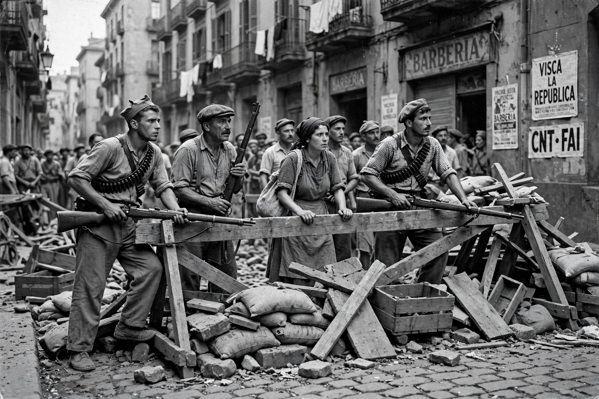

The Spanish Civil War (1936–1939) was fought between the Republicans, loyal to the left-leaning Popular Front government of the Second Spanish Republic, and the Nationalists, a rebel group led by General Francisco Franco. The Nationalist coup of 17–18 July 1936 failed to seize the whole country, and the ensuing war — marked by foreign intervention, revolutionary and counter-revolutionary terror, and the bombing of Guernica — ended in Nationalist victory. Franco ruled Spain as dictator until his death in 1975.
| Spanish Civil War | |
|---|---|
| Date | 17 July 1936 – 1 April 1939 |
| Location | Spain and Spanish Morocco |
| Result | Nationalist victory; Francoist Spain established |
| Belligerents | Spanish Republic (supported by the USSR, Mexico, International Brigades) v. Nationalists (supported by Germany and Italy) |
| Casualties | Estimates vary widely; often given as ~500,000 deaths including executions and bombing |
The Second Republic (proclaimed 1931) pursued land, church, army and regional reforms that polarised society; Catalonia gained autonomy while landowners, the Church and much of the officer corps resisted change and the left fractured between reformers, socialists, communists and anarchists. The Popular Front's narrow election victory of February 1936 was followed by strikes, church burnings and political assassinations, and army plotters — fearing revolution — launched their rising in Morocco on 17 July.
The coup split Spain: the rebels held Morocco, Andalusia's cities and the conservative north-west; the Republic kept Madrid, Barcelona and the industrial north's core. German and Italian aircraft airlifted Franco's Army of Africa across the strait. Madrid held out in November 1936 with Soviet aid and the first International Brigades. In April 1937 German aircraft of the Condor Legion destroyed Guernica, an atrocity immortalised by Picasso. The Republic's last great offensive, on the Ebro (July–November 1938), failed; Barcelona fell in January 1939, Madrid in March, and Franco declared victory on 1 April 1939.
Britain and France promoted a Non-Intervention Agreement that in practice disadvantaged the Republic, while Germany and Italy poured in men and matériel and the USSR supplied the Republic in exchange for Spain's gold reserves. Some 35,000–40,000 foreign volunteers fought in the International Brigades. Democracies' passivity and the war's bombing of civilians made it a widely perceived dress rehearsal for the Second World War.

[ IMAGE: Republican militiamen and civilians at a barricade in Barcelona, July 1936 — rifles slung, summer clothes, in the style of the era's news photographs. ] Barcelona, July 1936: the rising defeated in the streetsFranco's victory brought mass executions, prisons and exile for the defeated, and a dictatorship aligned with — though formally non-belligerent in — the Axis during much of the Second World War. Spain's transition to democracy after 1975 rested on a "pact of forgetting" that later generations challenged with exhumations and the Historical Memory Law (2007) and Democratic Memory Law (2022).
Barcelona · Catalonia · Madrid · Spain in the Napoleonic era
Categories: Spanish Civil War · 1930s in Spain · Francisco Franco